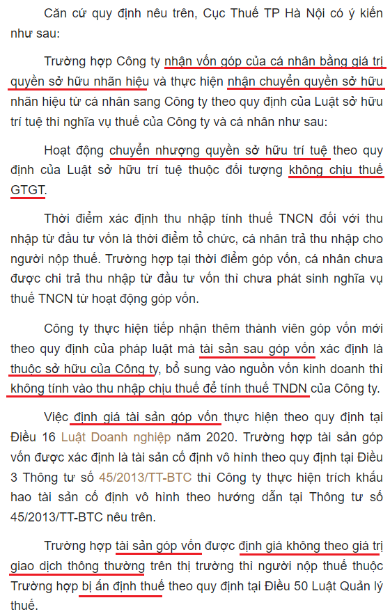
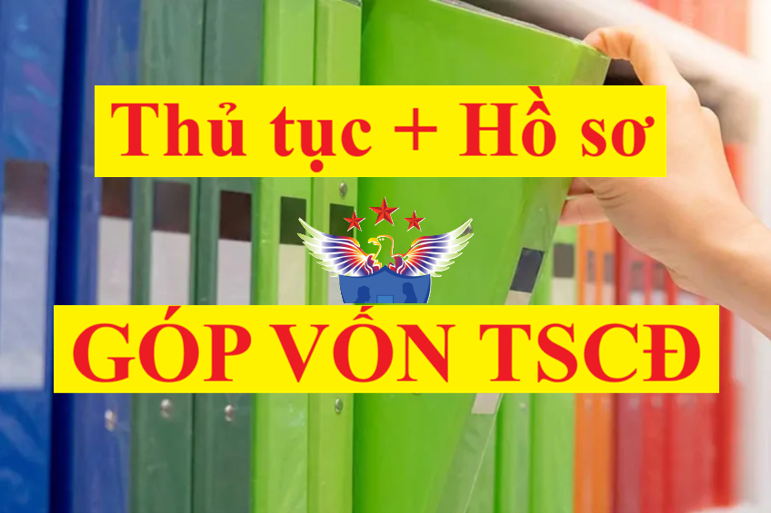

Góp vốn bằng tài sản có phải xuất hóa đơn? Hồ sơ, thủ tục góp vốn bằng tài sản cố định, cách hạch toán vốn góp bằng tài sản cố định đối với bên nhận vốn góp và góp vốn bằng TSCĐ như thế nào? Kế toán Diệu Tâm xin hướng dẫn chi tiết theo Luật DN, luật thuế GTGT mới nhất hiện hành.
I. Thủ tục hồ sơ góp vốn bằng TSCĐ:
Theo điều 34, 35 và 36 Luật Doanh nghiệp số 59/2020/QH14 ngày 17/06/2020 quy định tài sản góp vốn:
"Điều 34. Tài sản góp vốn
Điều 35. Chuyển quyền sở hữu tài sản góp vốn
1. Thành viên công ty trách nhiệm hữu hạn, công ty hợp danh và cổ đông công ty cổ phần phải chuyển quyền sở hữu tài sản góp vốn cho công ty theo quy định sau đây:
2. Biên bản giao nhận tài sản góp vốn phải bao gồm các nội dung chủ yếu sau đây:
3. Việc góp vốn chỉ được coi là thanh toán xong khi quyền sở hữu hợp pháp đối với tài sản góp vốn đã chuyển sang công ty.
4. Tài sản được sử dụng vào hoạt động kinh doanh của chủ doanh nghiệp tư nhân không phải làm thủ tục chuyển quyền sở hữu cho doanh nghiệp.
5. Việc thanh toán đối với mọi hoạt động mua, bán, chuyển nhượng cổ phần và phần vốn góp, nhận cổ tức và chuyển lợi nhuận ra nước ngoài của nhà đầu tư nước ngoài đều phải được thực hiện thông qua tài khoản theo quy định của pháp luật về quản lý ngoại hối, trừ trường hợp thanh toán bằng tài sản và hình thức khác không bằng tiền mặt.
Điều 36. Định giá tài sản góp vốn
II. Hóa đơn chứng từ đối với tài sản góp vốn:
|
Theo điểm e khoản 3 điều 13 của Nghị định 123/2020/NĐ-CP ngày 19/10/2020 thì: "e) Trường hợp góp vốn bằng tài sản của tổ chức, cá nhân kinh doanh tại Việt Nam để thành lập doanh nghiệp thì không phải lập hóa đơn mà sử dụng các chứng từ biên bản chứng nhận góp vốn, biên bản giao nhận tài sản, biên bản định giá tài sản kèm theo bộ hồ sơ về nguồn gốc tài sản." |
|
Theo khoản 12 điều 3 của Nghị định 168/2025/NĐ-CP về đăng ký doanh nghiệp
12. Giấy tờ chứng minh việc góp vốn bao gồm một trong các giấy tờ sau:
a) Bản sao hoặc bản trích sao sổ đăng ký thành viên hoặc sổ đăng ký cổ đông;
b) Bản sao giấy chứng nhận phần vốn góp;
c) Giấy xác nhận của ngân hàng về việc chuyển tiền vào tài khoản của doanh nghiệp;
d) Giấy tờ khác có giá trị chứng minh đã hoàn tất việc góp vốn theo quy định của pháp luật.
|
Căn cứ các quy định nêu trên, Hồ sơ góp vốn bằng TSCĐ gồm:
1. Nếu là cá nhân, tổ chức không kinh doanh:
+) Trường hợp cá nhân, tổ chức không kinh doanh có góp vốn bằng tài sản vào công ty TNHH, công ty cổ phần thì chứng từ đối với tài sản góp vốn là:
- Biên bản chứng nhận góp vốn
- Biên bản giao nhận tài sản.
2. Nếu là tổ chức, cá nhân kinh doanh góp vốn để thành lập doanh nghiệp:
+) Tài sản góp vốn vào DN phải có:
- Biên bản góp vốn sản xuất kinh doanh,
- Hợp đồng liên doanh, liên kết;
- Biên bản định giá tài sản của Hội đồng giao nhận vốn góp của các bên góp vốn (hoặc văn bản định giá của tổ chức có chức năng định giá theo quy định của pháp luật),
- Kèm theo bộ hồ sơ về nguồn gốc tài sản.
3. Góp vốn bằng TSCĐ có phải kê khai thuế GTGT không?
|
Theo khoản 1 điều 6 của Nghị định 181/2025/NĐ-CP
Điều 6. Giá tính thuế đối với hàng hóa, dịch vụ dùng để trao đổi, tiêu dùng nội bộ, biếu, tặng, cho và hàng hóa, dịch vụ dùng để khuyến mại
1. Đối với hàng hóa, dịch vụ dùng để trao đổi, tiêu dùng nội bộ, biếu, tặng, cho là giá tính thuế giá trị gia tăng của hàng hóa, dịch vụ cùng loại hoặc tương đương tại thời điểm phát sinh các hoạt động này. Trong đó, hàng hóa, dịch vụ tiêu dùng nội bộ là hàng hóa, dịch vụ do cơ sở kinh doanh xuất hoặc cung cấp sử dụng cho tiêu dùng, không bao gồm:
c) Tài sản điều chuyển giữa các đơn vị thành viên hạch toán phụ thuộc trong cơ sở kinh doanh; tài sản điều chuyển khi chia, tách, hợp nhất, sáp nhập, chuyển đổi loại hình doanh nghiệp; tài sản cố định đang sử dụng, đã thực hiện trích khấu hao khi điều chuyển theo giá trị ghi trên sổ sách kế toán giữa cơ sở kinh doanh và các đơn vị thành viên do một cơ sở kinh doanh sở hữu 100% vốn hoặc giữa các đơn vị thành viên do một cơ sở kinh doanh sở hữu 100% vốn để phục vụ cho hoạt động sản xuất, kinh doanh hàng hóa, dịch vụ chịu thuế giá trị gia tăng; tài sản góp vốn vào doanh nghiệp. Cơ sở kinh doanh có tài sản điều chuyển phải có lệnh điều chuyển tài sản, kèm theo bộ hồ sơ nguồn gốc tài sản. Tài sản góp vốn vào doanh nghiệp phải có: biên bản góp vốn sản xuất kinh doanh, hợp đồng liên doanh, liên kết; biên bản định giá tài sản của Hội đồng giao nhận vốn góp của các bên góp vốn (hoặc văn bản định giá của tổ chức có chức năng định giá theo quy định của pháp luật), kèm theo bộ hồ sơ về nguồn gốc tài sản.
Cơ sở kinh doanh có hàng hóa, dịch vụ quy định tại điểm a, b, c khoản này thì không phải tính thuế giá trị gia tăng. |
|
Theo khoản 2 điều 24 của Nghị định 181/2025/NĐ-CP
Điều 24. Khấu trừ thuế giá trị gia tăng đối với một số trường hợp đặc thù
2. Đối với trường hợp góp vốn bằng tài sản trong đó tài sản góp vốn là tài sản mới mua, chưa sử dụng, có hóa đơn hợp pháp được hội đồng giao nhận vốn góp chấp nhận thì trị giá vốn góp được xác định theo trị giá ghi trên hóa đơn bao gồm cả thuế giá trị gia tăng. Bên nhận vốn góp được khấu trừ thuế giá trị gia tăng ghi trên hóa đơn mua tài sản của bên góp vốn.
|
III. Góp vốn bằng tài sản có phải xuất hóa đơn?
|
Theo điểm e khoản 3 điều 13 của Nghị định 123/2020/NĐ-CP ngày 19/10/2020 thì: "e) Trường hợp góp vốn bằng tài sản của tổ chức, cá nhân kinh doanh tại Việt Nam để thành lập doanh nghiệp thì không phải lập hóa đơn mà sử dụng các chứng từ biên bản chứng nhận góp vốn, biên bản giao nhận tài sản, biên bản định giá tài sản kèm theo bộ hồ sơ về nguồn gốc tài sản." |
Theo điểm e khoản 3 điều 13 của Nghị định 123/2020/NĐ-CP nêu trên và:
Theo Công văn số 72271/CT-TTHT ngày ngày 16/09/2019 của cục thuế thành phố Hà Nội:
Theo công văn số 32670/CTHN-TTHT của Cục thuế TP. Hà Nội ngày 11/7/2022 V/v chính sách thuế đ/c việc góp vốn, nhận góp vốn

IV. Cách hạch toán góp vốn bằng tài sản cố định:
1. Nếu là cá nhân góp vốn vào thành lập Doanh nghiệp
- Khi DN thực nhận vốn góp bằng TSCĐ của các chủ sở hữu:
Nợ các TK 211 (theo giá thỏa thuận)
Có TK 4111- Vốn góp của chủ sở hữu
2. Nếu là Công ty góp vốn liên doanh, liên kết vào DN khác:
a. Bên nhận tài sản góp vốn:
- Khi DN thực nhận vốn góp bằng TSCĐ của các DN khác:
Nợ các TK 211 (theo giá thỏa thuận)
Có TK 4111- Vốn góp của chủ sở hữu
b. Bên góp vốn bằng tài sản:
- Khi góp vốn vào công ty con, liên doanh, liên kết bằng TSCĐ hữu hình (có 2 trường hợp như sau):
+) Trường hợp giá trị ghi sổ hoặc giá trị còn lại của tài sản đem đi góp vốn nhỏ hơn giá trị do các bên đánh giá lại, kế toán phản ánh phần chênh lệch đánh giá tăng tài sản vào thu nhập khác, ghi:
Nợ TK 222 - (theo giá trị đánh giá lại)
Nợ TK 214 - Hao mòn TSCĐ
Có các TK 211 - TSCĐ hữu hình (nguyên giá)
Có TK 711 - Thu nhập khác (số chênh lệch giữa giá đánh giá lại lớn hơn giá trị còn lại của TSCĐ).
+) Trường hợp giá trị ghi sổ hoặc giá trị còn lại của tài sản đem đi góp vốn lớn hơn giá trị do các bên đánh giá lại, kế toán phản ánh phần chênh lệch đánh giá giảm tài sản vào chi phí khác, ghi:
Nợ TK 222 - (theo giá trị đánh giá lại)
Nợ TK 214 - Hao mòn TSCĐ
Nợ TK 811 - Chi phí khác (số chênh lệch giữa giá đánh giá lại nhỏ hơn giá trị còn lại của TSCĐ)
Có các TK 211 - TSCĐ hữu hình (nguyên giá)
Chi tiết về việc hạch toán các bạn có thể xem tại: Cách hạch toán tài sản cố định - Tài khoản 211 theo Thông tư 99/2025/TT-BTC mới nhất 2026
Kế toán Diệu Tâm xin chúc các bạn thành công! Nếu các bạn muốn tìm hiểu sâu hơn về các nghiệp vụ kế toán, thực hành lập báo cáo tài chính, có thể tham gia: Lớp học thực hành kế toán
-------------------------------
